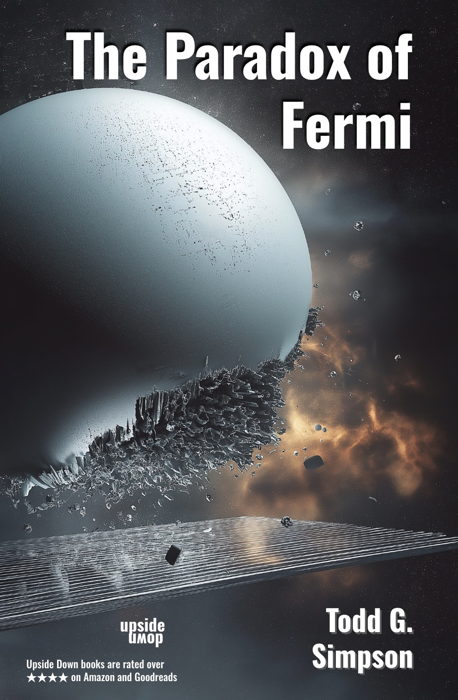

The Upside Down Universe
Science Fiction about AI, quantum foam, governance, and the future of humanity.
"Destined to be the next monumental SiFi epic saga everyone will want to read!"
The trilogy (Tilt, Turn, Twist) introduces Ayaka and her comrades. The companion novels (The Effect of Casimir, The Principle of Certainty, The Paradox of Fermi) are in the same universe, and Ayaka plays a role, but readers can enjoy them independently of the trilogy.
About the Author:
Simpson has a Ph.D. in Computer Science, and has founded and led numerous technology companies. He has a keen interest in the evolution of AI, including both its potential and risks. Having run public and private companies, worked for an open-source non-profit, and invested venture capital in early stage companies, he has experience with the positives and negatives of corporate structure, particularily in the larger context of nation-state governance and incentive systems. His books explore both the future of AI and the future of governance.

|
|
Tilt
Ayaka and her colleagues have developed a new form of AI. These 'Stems' are messy, unconventional, have bad tempers, and many scientists don't believe they deserve the term 'intelligent.' So, it's shocking when spaceships full of Stems arrive at Tilt. How could Stems have been developed elsewhere, and were they really smart enough to run spaceships on their own?
Even more shocking, the Stems attack Tilt, despite their limited intelligence, and turn the planet into disarray. Ayaka and a few of her closest friends are the only ones able to fight back. Can they escape the onslaught?
"Loved it. It is rare for me to find a book that is entertaining and makes me think at the same time. Looking forward to the next book."
"Tilt -- an exciting ride with surprises and unexpected twists all the way through. This is one of the best SiFi novels I've read since I was a kid. It took me several chapters to catch the "aha" of the genius twist in the story. The ending left me (virtually) spinning in the breeze, very anxious for the next installment of this story. This series is destined to be the next monumental epic saga everyone will want to read. Bring on the next update!"
|

|
|
Turn
Ayaka, Brexton, and a few colleagues get off Tilt, while everyone else is killed or imprisoned. How did the limited intelligence Stems defeat them? Do they need to reinvent themselves? If they do, can they return to Tilt and take on the Stems?
"I enjoyed the first in this series, but this book and the next were even more fast paced and exciting. I really wasn't sure what was going to happen. I really think all three are a wonderful exploration of intelligence, what is it, how is it measured, etc. A great way to show how one's point-of-view colors perception."
|

|
|
Twist
Yet another faction of Stems shows up at Tilt, complicating things further. These are truly strange variants, and their behavior is unexplainable. Are they dangerous, or just weird? Ayaka and Brexton integrate into their society, only to find that it poses significant threats to them, and their kind.
In the exciting conclusion to the Upside Down Trilogy, Ayaka and Brexton fight for their lives, and the lives of their species. But, are they right to do so?
"There are few books, such as this.
This is a series that is intelligently written, well-structured and able to articulate what the soon-coming world will look.
A library must-have that should re-read every year.
Thanks for such a gift, Mr. Simpson.
I wish I had more stars to give."
|

|
|
The Upside Down Trilogy:
All three books in one volume
"Thoughtful and well imagined. I especially appreciated the painful and encouraging process (three steps forward and two steps back) that the protagonist traveled to gain real empathy. Shouldn't this book be a Netflix series?"
|

|
|
The Effect of Casimir
Ayaka has come to Earth, sponsored by the powerful Titanic Inc. Asked to investigate the murder of a famous physicist she immediately suspects that Brexton is involved. But he isn't even on Earth. Should she misdirect the other investigators to cover up his actions, or is it time to tell the truth?
"In this new (stand alone) novel, Simpson takes us on a fun and exciting adventure bringing back some of the key characters from the Tilt, Twist, Turn trilogy. As always the plot is grounded in physics and in this case at the site of the famous Large Hadron Collider (LHC), many years in the future. The story and characters are thoughtful and intriguing and there are many laugh out loud moments! Highly recommended."
|
|
|
|
The Principle of Certainty
Strange murders and suicides are sweeping through Earth. There is a tenuous thread connecting them and tangled in that thread is Ayaka. Is she involved, and if so, how can she be held to account?
"A great read. I got caught up in the plot but I also really appreciate the many thought-provoking theories, ideas, and concepts that it is built around. It's a sophisticated piece of writing."
|
|

|
|
The Paradox of Fermi
First contact is not what anyone expected. A Titanic Spaceship carrying a Hawaiian diaspora is stranded in space, 200 light years away. Will the aliens help, or simply try to steal the unusual human technology that powers the ship?
"This novel has it all - mystery, twists, humor - imbued with a deep understanding of humans and their motivations across generations."
|
The following diagram shows the timeline of the Upside Down novels, respecting the physics outlined in the next section. For clarity, the x-axis is time and the y-axis is space. The speed of the Titanic ships is shown in the growth of the grey region, being the distance from Earth that those ships can travel in the given timeframe.
The novels respect large scale physics (relativity, the speed of light), but make fairly drastic leaps with the small (quantum). Information and travel are constrained to the speed of light; there are no wormholes or other shortcuts through space-time. The leap is that a specific manipulation in quantum field theory enables spaceships to travel close to the speed of light without incurring the costs of acceleration.